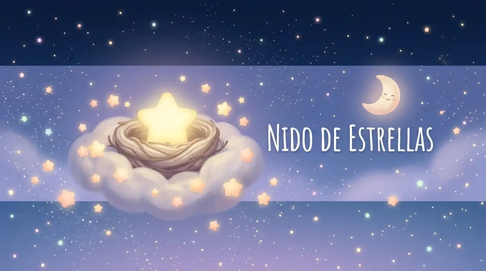
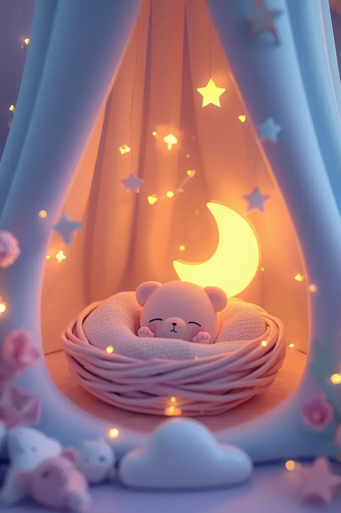

¿El día ha sido largo?
Tómate un respiro. Deja las cosas pendientes a un lado y encuentra tu momento de calma en familia.

Historias breves para cerrar el día con paz
Sin prisas ni complicaciones. Elige un cuento corto de ritmo pausado y acompaña a los más pequeños hacia un descanso tranquilo.
Comenzar a leer un cuentoUn refugio de calma y apoyo para las familias
Acompañamos a tus hijos en el viaje hacia el descanso, transformando la rutina nocturna en un momento de conexión, aprendizaje y paz profunda.
Bienvenido a El Nido de Estrellas, un espacio creado con el propósito de brindar serenidad al hogar. Más allá de nuestras historias para dormir, nuestro compromiso es ofrecer a los padres un apoyo integral y riguroso, abordando a través de guías especializadas los temas más importantes sobre la salud, el desarrollo y el bienestar en la infancia.

A través de nuestros contenidos, ayudamos a las familias a:
Desde los miedos cotidianos hasta las alegrías compartidas, ofrecemos un lugar seguro donde cada sentimiento es validado.
Integramos técnicas de higiene del sueño y guías médicas y de desarrollo accesibles para acompañar cada etapa del crecimiento infantil.
Nuestras narraciones de ritmo pausado y nuestros recursos prácticos preparan el terreno para una convivencia respetuosa y un descanso reparador.
¿Quién hay detrás de este nido?
Este espacio no responde a grandes planes corporativos, sino a la observación cercana de las necesidades reales de las familias. Si quieres conocer nuestra filosofía, el origen del proyecto y el propósito humano que lo impulsa, te invitamos a leerlo con calma.
Conocer Nuestro Proyecto